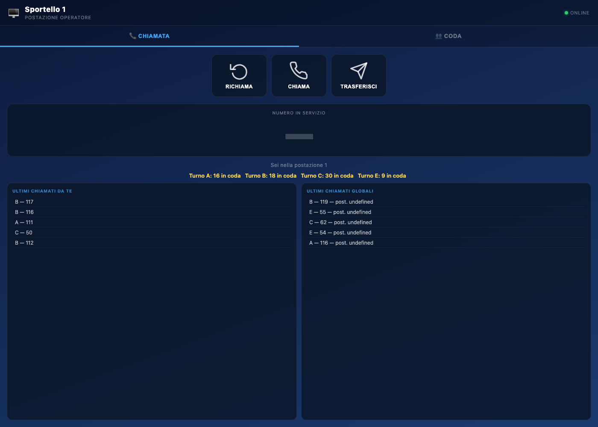

L’interfaccia
Lo schermo dello sportello è sempre lo stesso: intestazione, due schede, un numero grande al centro e due tabelle. Bastano trenta secondi per riconoscere ogni zona.

Le zone della schermata
| Zona | Cosa contiene |
|---|---|
| Intestazione | “Sportello n”, la scritta “Postazione operatore” e il segnale ONLINE |
| Schede | Chiamata (attiva all'apertura) e Coda |
| Tre tasti | Richiama, Chiama, Trasferisci |
| Numero in servizio | Il numero che stai gestendo, scritto in grande |
| Barra informazioni | “Sei nella postazione n” e, se c'è attesa, quanti numeri sono in coda |
| Tabelle | “Ultimi chiamati da te” e “Ultimi chiamati globali” |
Le due schede
| Scheda | A cosa serve |
|---|---|
| Chiamata | Il lavoro normale: chiamare, richiamare, trasferire, vedere il numero in servizio |
| Coda | I turni in attesa divisi per servizio, con un pulsante per chiamare direttamente un turno specifico |
Il passaggio tra le due schede non interrompe nulla: la coda continua ad aggiornarsi anche mentre sei nella scheda Chiamata.
Il numero in servizio
La scheda grande al centro mostra il numero che hai chiamato per ultimo. All'apertura, prima della prima chiamata, mostra una linea: significa che non c'è ancora un numero in servizio.
Il numero grande è la risposta alla domanda “chi sto servendo adesso?”. Se non corrisponde al paziente davanti a te, hai chiamato il turno sbagliato: usa Trasferisci per rimetterlo nel flusso corretto.
Le due tabelle
| Tabella | Cosa mostra | Quando guardarla |
|---|---|---|
| Ultimi chiamati da te | I turni che hai chiamato dal tuo sportello, dal più recente | Per ritrovare un numero appena servito |
| Ultimi chiamati globali | Le chiamate di tutti gli sportelli, con il numero di postazione | Per capire se un paziente è stato chiamato altrove |
Entrambe si aggiornano da sole ogni pochi secondi: non serve ricaricare la pagina.
La barra degli avvisi
Sotto il numero in servizio può comparire una riga con l'attesa per servizio, per esempio “Turno A: 4 in coda · Turno B: 1 in coda”. È il modo più rapido per capire se conviene accelerare o se la sala si sta svuotando.
Se la riga è vuota e la scheda Coda dice “Nessun utente in coda”, non c'è nessuno in attesa: puoi dedicarti ad altro senza timore di lasciare pazienti senza chiamata.